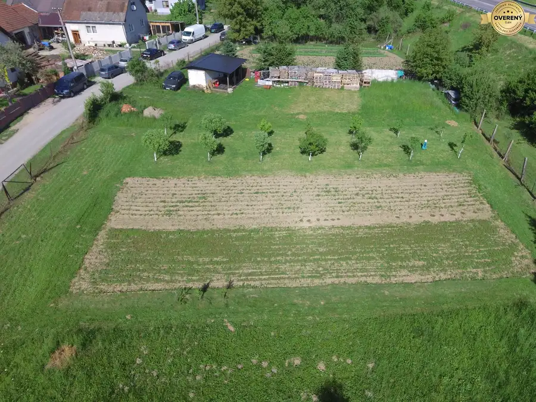
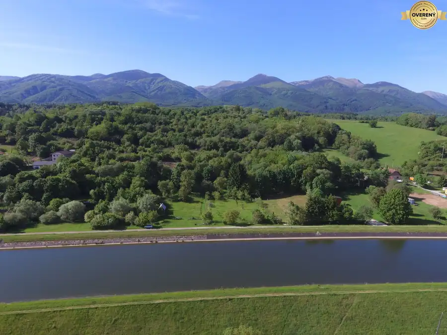
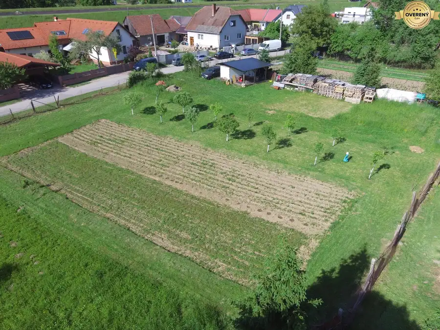
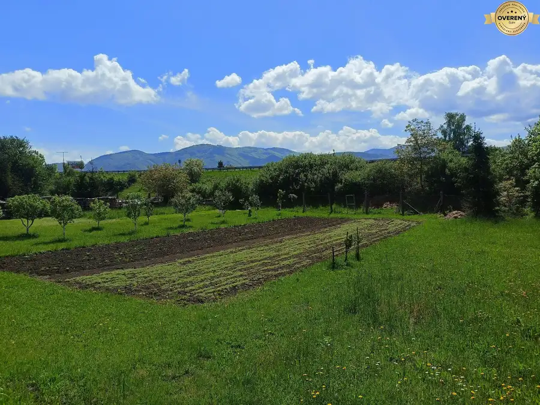

Možnosť kúpy stavebného pozemku v Turanoch
Turany






- Plocha1189 m²
- Poschodie0.
- Vlastníctvoosobné
O nehnuteľnosti
Ponúkame Vám možnosť kúpiť stavebný pozemok v meste Turany. Ide o rovinatý, slnečný pozemok s priamym výhľadom na Malú Fatru a Veľký Fatranský Kríváň, ktorý má plochu 1189 m2. Rozmery sú približne 27 m x 40 m.
Súčasné využitie pozemku je ako záhrada, ale budúce využitie pozemku umožňuje na ňom umiestniť rodinný dom, rekreačný objekt, napríklad chatu alebo stavbu základnej občianskej vybavenosti.
Na hranici pozemku sa nachádzajú siete: elektrické rozvody (3f/400V), verejný vodovod, verejná kanalizácia. Kapacita všetkých uvedených sietí umožňuje ďalšie pripojenie. K pozemku vedie verejná prístupová komunikácia vo forme asfaltovej cesty.
Mesto Turany sa nachádza v blízkosti okresného mesta Martin (cca. 14 minút). Dostupnosť do krajského mesta Žilina je v súčasnosti 29 minút. Mesto Turany ponúka základnú občiansku vybavenosť. V meste sa nachádzajú obchody, reštaurácie, pošta, mestský úrad, kostoly, pohostinstvá, materská aj základná škola, ordinácie lekárov a stomatológa. Dobrú dopravnú dostupnosť dopĺňajú železničná stanica a zastávka medzimestskej autobusovej dopravy. Mesto Turany sa nachádza medzi pohoriami Veľkej a Malej Fatry a je východiskovým miestom pre mnohé turistické trasy a cyklotrasy. Asi najznámejšia je turistická trasa na Veľký Fatranský Kriváň. V blízkosti sa nachádza aj turistami často vyhľadávaný Šútovský vodopád.
Úplnú občiansku vybavenosť ponúkajú okresné mesto Martin, kde sa nachádzajú aj všetky úrady, nemocnica, univerzita a.i. Vďaka diaľnici D1 a ceste prvej triedy 18/E50 je dopravná dostupnosť na vysokej úrovni a ide o jediný smer do mesta Martin, ktorý je bezproblémový, čo zvyšuje hodnotu nehnuteľností v tejto lokalite.
Majiteľ ponúka možnosť rokovať aj o kúpe len časti pozemku, poprípade aj o odpredaji susedného pozemku, ktorý je vo vlastníctve rodiny majiteľa. Všetko je na dohode.
Na kúpu pozemku je možné vybaviť hypotekárny úver. K pozemku máme územnoplánovaciu informáciu ako aj vyjadrenia dodávateľov energií a poskytneme ich k dispozícii prípadnému záujemcovi.
Hypotekárny úver Vám vieme vybaviť priamo v našej kancelárii a tým znížiť Vaše administratívne zaťaženie.
V prípade, že hľadáte vhodný pozemok pre Vašu nehnuteľnosť, určite Vám odporúčame obhliadku na tomto pozemku.
Parametre
- Rozloha pozemku
- 1189 m²
- Poschodie
- prízemie
- Vlastníctvo
- osobné
- Status
- aktívne
- Odvoz odpadu
- áno
- Voda
- verejný vodovod
- El. napätie
- 230/400V
- Plyn
- nie
- Kanalizácia
- áno
- Inžinierske siete
- áno
- Orientácia
- sever/juh
- Terén
- rovina
- Prístupová cesta
- asfaltová cesta
- Pripravené na výstavbu
- schválené v územnom pláne
- Dátum zverejnenia
- 2026-06-01